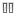

GeoGebra ofrece
una Barra de Navegación que permite
recorrer los pasos de construcción del boceto elaborado. Al seleccionar ‘Barra
de Navegación por Pasos de Construcción’ en el Menú Vista la Barra de
Navegación aparece al pie de la Vista
Gráfica.
La Barra de Navegación presenta una
botonera y expone el número de Pasos de Construcción (por ejemplo., 2 / 7 significa que estamos frente al
segundo de un total de siete Pasos de Construcción):
·
es
el botón para: ‘retroceder al paso inicial’
·
es
el botón para: ‘retroceder paso a paso’
·
es
el botón para: ‘avanzar paso a paso’
·
es
el botón para: ‘avanzar hasta el ultimo paso’
·
‘Reproduce’:
‘automáticamente ejecuta la construcción paso a paso
Atención: La caja de texto a la derecha del botón ‘Reproduce’ permite establecer la velocidad de
ejecución automática.
·
 ‘Pausa’: establece una ‘pausa en la ejecución
automática’
Atención: Este botón sólo aparece durante una ejecución iniciada con ‘Reproduce’.
·
 es
el botón para abrir el Protocolo de Construcción.
es
el botón para abrir el Protocolo de Construcción.